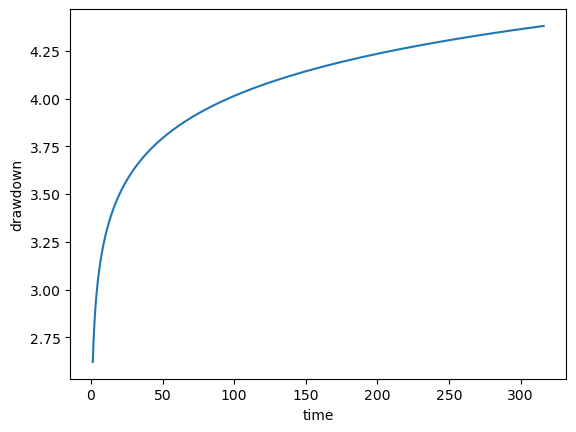
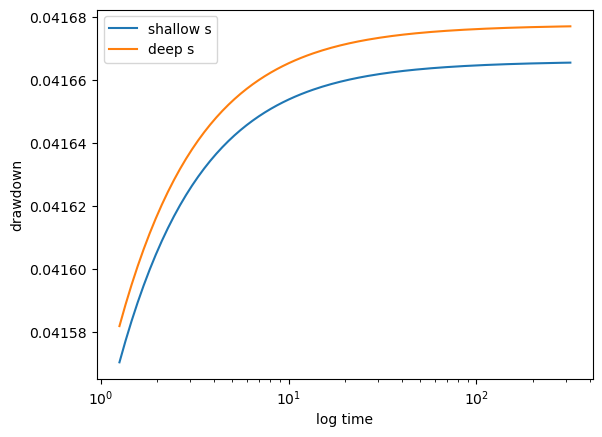
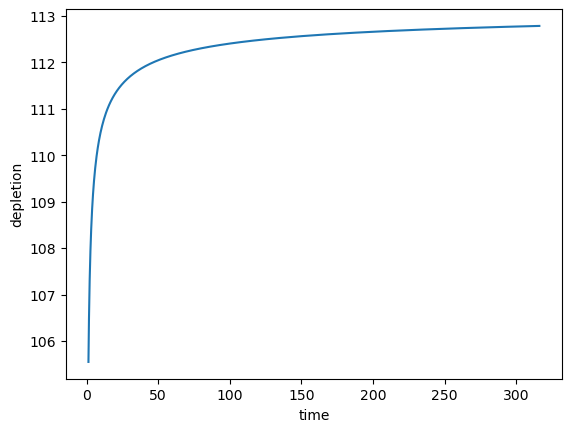
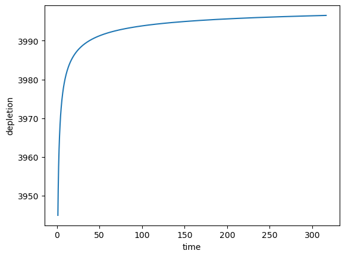
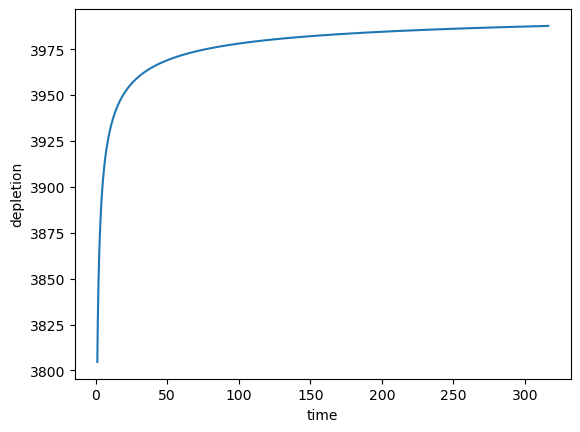

Solution Demonstrations for pycap
First, make some imports
[1]:
import sys
sys.path.insert(1, "../../")
import matplotlib.pyplot as plt
import numpy as np
Individual Functions
Set some common variables to evaluate. Note that the units here are using SI units. Almost all the functions in this suite are arbitrary provided the units are self-consistent. In other words, if T is provided in m/d, then Q must by in m**3/d and so on.
[2]:
T = 1000 # Transmissivity [m/day]
S = 3e-6 # Storativity [unitless]
dist = 500 # distance [m]
time = np.logspace(0.1, 2.5, 150) # time [day]
Q = 4000 # pumping rate [m**3/day]
Theis Drawdown
[3]:
from pycap.solutions import theis_drawdown
[4]:
s_theis = theis_drawdown(T, S, time, dist, Q)
[5]:
plt.plot(time, s_theis)
plt.xlabel("time")
plt.ylabel("drawdown")
[5]:
Text(0, 0.5, 'drawdown')

Ward-Lough 2-Layer Drawdown
We need a couple more variables (assuming the previously defined variables pertain to the upper aquifer, then the lower aquifer is defined by T2,S2, etc.) and river and aquitard characterstics.
[6]:
T2 = 1400 # Deep aquifer Transmissivity [m/day]
S2 = 1e-4 # Deep aquifer Storativity [unitless]
width = 10 # stream width [m]
streambed_thick = 20 # stream sediment thickness [m]
streambed_K = 250 # streambed hydraulic conductivity
aquitard_thick = 1 # aquitard thickness [m]
aquitard_K = 50 # aquitard hydraulic conductivity
x = 20 # x-location at which to calculate drawdown
# (x=0 is at the stream)
y = 5 # x-location at which to calculate drawdown
# (y=0 is the along-stream location of the pumping well)
[7]:
from pycap.solutions import ward_lough_drawdown
[8]:
s_wl = ward_lough_drawdown(
T,
S,
time,
dist,
Q,
width=width,
T2=T2,
S2=S2,
streambed_thick=streambed_thick,
streambed_K=streambed_K,
aquitard_thick=aquitard_thick,
aquitard_K=aquitard_K,
x=x,
y=y,
)
[9]:
plt.plot(time, s_wl[:, 0], label="shallow s")
plt.plot(time, s_wl[:, 1], label="deep s")
plt.legend()
plt.xscale("log")
plt.xlabel("log time")
plt.ylabel("drawdown")
[9]:
Text(0, 0.5, 'drawdown')

Walton Depletion
Note that this function must use Imperial units of feet for length and days for time.
[10]:
from pycap.solutions import walton_depletion
[11]:
qd = walton_depletion(T * 0.3048, S, time, dist, Q * (0.3048**3))
[12]:
plt.plot(time, qd)
plt.xlabel("time")
plt.ylabel("depletion")
[12]:
Text(0, 0.5, 'depletion')

Glover Depletion
[13]:
from pycap.solutions import glover_depletion
[14]:
qd = glover_depletion(T, S, time, dist, Q)
[15]:
plt.plot(time, qd)
plt.xlabel("time")
plt.ylabel("depletion")
[15]:
Text(0, 0.5, 'depletion')

Ward-Lough 2-Layer Depletion
[16]:
from pycap.solutions import ward_lough_depletion
[17]:
qd_wl = ward_lough_depletion(
T,
S,
time,
dist,
Q,
T2=T2,
S2=S2,
width=width,
streambed_thick=streambed_thick,
streambed_K=streambed_K,
aquitard_thick=aquitard_thick,
aquitard_K=aquitard_K,
x=0,
y=5,
)
[18]:
plt.plot(time, qd_wl)
plt.xlabel("time")
plt.ylabel("depletion")
[18]:
Text(0, 0.5, 'depletion')

[ ]: